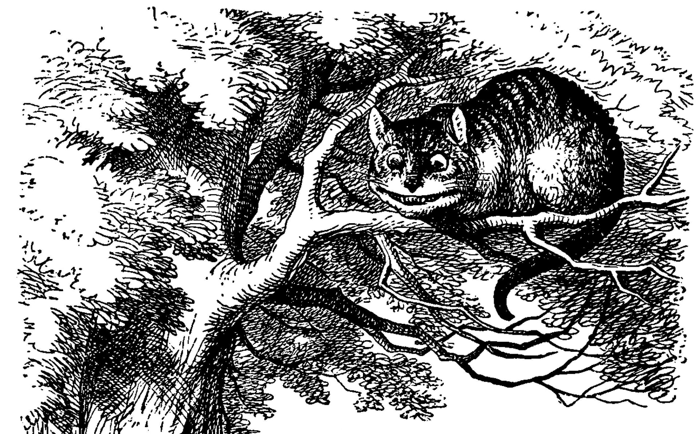

范畴论完全装逼手册 / Grokking Monad
第一部分：猫论
 https://en.wikipedia.org/wiki/Cheshire_Cat
`But I don’t want to go among mad people,’ Alice remarked.
`Oh, you can’t help that,’ said the Cat: `we’re all mad here. I’m mad. You’re mad.’
`How do you know I’m mad?’ said Alice. `You must be,’ said the Cat, `or you wouldn’t have come here.’
Alice didn’t think that proved it at all; however, she went on `And how do you know that you’re mad?’
– Alice's Adventures in Wonderland
单子是什么? 你也不懂, 我也不懂, 我们都不懂.
话说, 我又怎么知道你不懂呢?
当然不懂, 不然, 你怎么会来到这里?
我又是怎么知道自己不懂呢?
因为, 我知道懂的人什么样子. 显然, 我不是.
懂的人一定知道猫论.
懂猫论的人又不一定知道编程. 但是懂编程的人可以略懂猫论.
编程是项技术, 即理论的降维. 所以要降低门槛, 比如我在书中也写过一章用JavaScript来解释，某人也尝试过写博客解释，
如果没看就刚好不要看了, 确实有些误导
没想到那些也不知道会不会 Haskell/Scala 的人就跑出来喷你们前端
等等, 写前端怎么了? JavaScript 只是我觉得顺手的若干语言之一, JS用户那么多, 写书当然要用 JS 啦, 难道用 Idris 那还能卖得掉吗? 当然最后用JS也没怎么卖掉…
这些不懂函数式的渣渣乱搞出来的东西根本就不是单子。
我也画过一些图来解释，又会被嫌弃画风不好。但是，作为灵魂画师，我只 是觉得自己萌萌的啊 在乎画的灵魂是否能够给你一点启发。好吧，讲这么学术的东西，还是用dot来画吧，看起来好正规呢。
好了，安全带系好，我真的要开车了。为了防止解释的不到位，就用 Haskell/Scala 好了
并不是说这两门语言一定在鄙视链顶端, 而是拥有强大类型系统的语言才能体现出范畴论的内容
，其实也不难解释清楚 才怪 。
这里面很多很装逼的单词，它们都是 斜体 ，就算没看懂，把这些词背下来也足够装好一阵子逼了。
这里还有很多代码, 它们都成对出现, 第一段是 Haskell, 第二段是 Scala.
Category
一个 范畴 包含两个玩意
- 东西
O（Object） - 两个东西的关系，箭头
~>（ 态射 ）
还必须带上一些属性:
- 一定有一个叫 id 的箭头，也叫做 1
- 箭头可以 组合
恩, 就是这么简单!
注意到为什么我会箭头从右往左，接着看代码, 你会发现这个方向跟 compose 的方向刚好一致!
这些玩意对应到 haskell 的 typeclass 大致就是这样:
class Category (c :: * -> * -> *) where id :: c a a (.) :: c y z -> c x y -> c x z
而 Scala 可以用 trait 来表示这个 typeclass:
trait Category[C[_, _]] { val id[A]: C[A, A] def <<<(a: C[Y, Z], b: C[X, Y]): C[X, Z] }
如果这是你第一次见到 Haskell 代码，没有关系，语法真的很简单 才怪
class定义了一个 TypeClass，Category是这个 TypeClass 的名字- Type class 类似于定义类型的规范，规范为
where后面那一坨 - 类型规范的对象是参数
(c:: * -> * -> *)，::后面是c的类型 - c 是 higher kind
* -> *，跟higher order function的定义差不多，它是接收类型，构造新类型的类型。这里的 c 接收一个类型，再接收一个类型，就可以返回个类型。
id:: c a a表示 c 范畴上的 a 到 a 的箭头.的意思 c 范畴上，如果喂一个 y 到 z 的箭头，再喂一个 x 到 y 的箭头，那么就返回 x 到 z 的箭头。
另外 compose 在 haskell 中直接是句号 .
scala 中用 <<< 或者 compose
总之, 用文字再读一遍上面这些代码就了然了.
范畴 C 其实就包含
- 返回 A 对象到 A 对象的 id 箭头
- 可以组合 Y 对象到 Z 对象 和 X 对象到 Y 对象的箭头 compose
简单吧?还没有高数抽象呢。
Hask
Haskell 类型系统范畴叫做 Hask
在 Hask 范畴上：
- 东西就是类型
- 箭头是类型的变换，即
-> - id 就是 id 函数的类型
a -> a - compose 当然就是函数组合的类型
type Hask = (->) instance Category (Hask:: * -> * -> *) where (f . g) x = f (g x)
我们看见新的关键字 instance ，这表示 Hask 是 Type class Category 的实例类型，也就是说对任意Hask类型, 那么就能找到它的 id 和 compose
implicit val haskCat: Category[Hask[_, _]] = new Category[Hask] { val id[A] = identity[A] def <<<[X, Y, Z](a: Hask[Y, Z], b: Hask[X, Y]) = a compose b }
Scala 中, 只需要 new 这个 trait 就可以实现这个 typeclass
其中: identity Hask a a 就是
(->) a a -- or a -> a -- 因为 -> 是中缀构造器
A => A
Duel
每个 Category 还有一个镜像，什么都一样，除了箭头是反的
函子 / Functor
两个范畴中间可以用叫 Functor 的东西来连接起来，简称 T。
所以大部分把 Functor/Monad 比喻成盒子其实在定义上是错的，虽然这样比喻比较容易理解，在使用上问题也不大。但是，Functor 只是从一个范畴到另一个范畴的映射关系而已。
- 范畴间 东西的 Functor 标记为
T(O) - 范畴间 箭头的 Functor 标记为
T(~>) - 任何范畴C上存在一个 T 把所有的 O 和 ~> 都映射到自己，标记为id functor 1C
- 1C(O) = O
- 1C(~>) = ~>
class (Category c, Category d) => Functor c d t where fmap :: c a b -> d (t a) (t b)
trait Functor[C[_, _], D[_, _], T[_]] { def fmap[A, B](c: C[A, B]): D[T[A], T[B]] }
Functor c d t 这表示从范畴 c 到范畴 d 的一个 Functor t
如果把范畴 c 和 d 都限制到 Hask 范畴
class Functor (->) (->) t where fmap :: (->) a b -> (->) (t a) (t b)
trait Functor[=>[_, _], =>[_, _], T[_]] { def fmap[A, B](c: =>[A, B]): =>[T[A], T[B]] }
-> 在 Haskell 中是中缀类型构造器，所以是可以写在中间的
这样就会变成我们熟悉的 Funtor 的 Typeclass 这里可以把 Functor 的第一第二个参数消掉, 因为已经知道是在 Hask 范畴了
class Functor t where fmap :: (a -> b) -> (t a -> t b)
trait Functor[T[_]] { def fmap[A, B](c: A => B): T[A] => T[B] }
而 自函子 就是这种连接相同范畴的 Functor，因为它从范畴 Hask 到达同样的范畴 Hask
这回看代码就很容易对应上图和概念了, 这里的自函子只是映射范畴 -> 到 ->, 箭头函数那个箭头, 类型却变成了 t a
这里的 fmap 就是 T(~>)，在 Hask 范畴上，所以是 T(->), 这个箭头是函数，所以也能表示成 T(f) 如果 f:: a -> b
TODO Cat
递归的, 当我们可以把一个 Category 看成一个 object，functor 看成箭头，那么我们又得到了一个 Category，这种 object 是 category 的 category 我们叫它 – Cat
已经没的办法用语言描述这么高维度的事情了，看图吧…
自然变换 / Natural Transformations
Functor 是范畴间的映射，所以在这个 Cat 范畴中, 把范畴看成是对象, 那么 Functor 在 Cat 范畴又是个箭头
而 Functor 间也有映射，叫做 喵的变换 自然变换
范畴 c 上的函子 f 到 g 的自然变化就可以表示成
type Nat c f g = c (f a) (g a)
Scala 没有 rank n type 别急, 后面马上讲到 , 只能靠 apply 来 meme 了
trait Nat[C[_, _], F[_], G[_]] { def apply[A]: C[F[A], G[A]] }
Hask 范畴上的自然变化就变成了
type NatHask f g = f a -> g a
trait NatHask[F[_], G[_]] { def apply[A]: F[A] => G[A] }
有趣的是, 还可以继续升维度, 比如
- 东西是函子
- 箭头是自然变换
恭喜你到达 Functor 范畴.
当然, 要成为范畴，还有两个属性:
- id 为 f a 到 f a 的自然变换
- 自然变换的组合
别着急, 我们来梳理一下，如果已经不知道升了几个维度了，我们假设类型所在范畴是第一维度
- 一维： Hask， 东西是类型，箭头是 ->
- 二维： Cat， 东西是 Hask， 箭头是 Functor
- 三维： Functor范畴， 东西是Functor， 箭头是自然变换
感觉到达三维已经是极限了，尼玛还有完没完了，每升一个维度还要起这么多装逼的名字，再升维度老子就画不出来了
所以这时候, 需要引入 String Diagram。
String Diagram
String Diagram 的概念很简单，就是点变线线变点。
还记得当有了自然变换之后，三个维度已经没法表示了，那原来的点和线都升一维度，变成线和面，这样，就腾出一个点来表示自然变换了。

compose的方向是从右往左，从下到上。
Adjunction Functor 伴随函子
范畴C和D直接有来有回的函子，为什么要介绍这个，因为它直接可以推出 Monad
让我们来看看什么叫有来回。

其中：
- 一个范畴 C 可以通过函子 G 到 D，再通过函子 F 回到 C，那么 F 和 G 就是伴随函子。
- η 是 GF 到 1D 的自然变换
- ε 是 1C 到 FG 的自然变换
同时根据同构的定义，G 与 F 是 同构 的。
同构指的是若是有
f :: a -> b f':: b -> a
那么 f 与 f' 同构，因为 f . f' = id = f' . f
伴随函子的 FG 组合是 C 范畴的 id 函子 F . G = 1c

Functor 不仅横着可以组合，竖着(自然变换维度)也是可以组合的，因为自然变换是 Functor 范畴的箭头。

当到组合 F η . ε F 得到一个弯弯曲曲的 F 时，我们可以拽着F的两段一拉，就得到了直的 F。
String Diagram 神奇的地方是所有线都可以拉上下两端，这个技巧非常有用，在之后的单子推导还需要用到。
从伴随函子到 单子
有了伴随函子，很容易推出单子，让我们先来看看什么是单子
- 首先，它是一个 endofunctor T
- 有一个从 ic 到 T 的自然变化 η (eta)
- 有一个从 T2 到 T 的自然变化 μ (mu)

class Endofunctor c t => Monad c t where eta :: c a (t a) mu :: c (t (t a)) (t a)
trait Monad[C[_, _], T[_]]] extends Endofunctor[C, T] { def eta[A]: C[A, T[A]] def mu[A]: C[T[T[A]], T[A]] }
同样，把 c = Hask 替换进去，就得到更类似我们 Haskell 中 Monad 的定义
class Endofunctor m => Monad m where eta :: a -> (m a) mu :: m m a -> m a
trait Monad[M[_]] extends Endofunctor[M] { def eta[A]: A => M[A] def mu[A]: M[M[A]] => M[A] }
要推出单子的 η 变换，只需要让 FG = T

同样的，当 FG = T, F η G 就可以变成 μ

三角等式
三角等式是指 μ . T η = T = μ . η T
要推出三角等式只需要组合 F η G 和 ε F G


换到代码上来说
(mu . eta) m = m
同样的，左右翻转也成立

 T η 就是 fmap eta
T η 就是 fmap eta
(mu . fmap eta) m = m
如果把 mu . fmap 写成 >>= , 就有了
m >>= eta = m
结合律
单子另一大定律是结合律，让我们从伴随函子推起
假设我们现在有函子 F η G 和 函子 F η G F G, compose 起来会变成 F η G . F η G F G

用 F G = T ， F η G = μ 代换那么就得到了单子的 μ . μ T

当组合 F η G 和 F G F μ G 后，会得到一个镜像的图

对应到单子的 μ . T μ
结合律是说 μ . μ T = μ . T μ , 即图左右翻转结果是相等的，为什么呢？看单子的String Diagram 不太好看出来，我们来看伴随函子
如果把左图的左边的 μ 往上挪一点，右边的 μ 往下挪一点，是不是跟右图就一样了

结合律反映到代码中就是
mu . fmap mu = mu . mu
代码很难看出结合在哪里，因为正常的结合律应该是这样的 (1+2)+3 = 1+(2+3)，但是不想加法的维度不一样，这里说的是自然变换维度的结合，可以通过String Diagram 很清楚的看见结合的过程，即 μ 左边的两个T和先 μ 右边两个 T 是相等的。
Yoneda lemma / 米田共 米田引理
米田引理是说所有Functor f a 一定存在 embed 和 unembed，使得 f a 和 (a -> b) -> F b isomorphic 同构
haskell还要先打开 RankNTypes 的 feature
{-# LANGUAGE RankNTypes #-} embed :: Functor f => f a -> (forall b . (a -> b) -> f b) embed x f = fmap f x unembed :: Functor f => (forall b . (a -> b) -> f b) -> f a unembed f = f id
Scala 语言没有 Rank N Type支持, 但是 自然变换 提到过可以用 apply 来模拟. 其实可以使用 Cats 的 FunctionK(~>) 更方便:
def embed[F[_], A](fa: F[A])(implicit f: Functor[F]): (A => ?) ~> F = Lambda[(A => ?) ~> F](f.fmap(_)(fa)) def unembed[F[_]](fnk: (A => ?) ~> F): F[A] = fnk(identity)
embed 可以把 functor f a 变成 (a -> b) -> f b
unembed 是反过来， (a -> b) -> f b 变成 f a
上个图就明白了
Rank N Type
说好的要解释 Rank N Type
Haskell 中可以不用声明类型, 但是其实是省略掉 universally quantified forall, 如果把 forall 全部加回来,
就明了很多:
- Monomorphic Rank 0 / 0级单态 也就不是不变态 : t
- Polymorphic Rank 1 / 1级
变态多态: forall a b. a -> b - Polymorphic Rank 2 / 2级多态: forall c. (forall a b. a -> b) -> c
- Polymorphic Rank 3 / 3级多态: forall d . (forall c . (forall a b . a -> b) -> c) -> d
看 rank 几只要数左边 forall 的个数就好了.
一级多态只锁定一次类型 a 和 b
二级多态可以分两次确定类型, 第一次确定 c, 第二次确定 a b
三级多台分三次: 第一次 d, 第二次 c, 第三次 a b
比如:
rank2 :: forall b c . b -> c -> (forall a. a -> a) -> (b, c) rank2 b c f = (f b, f c) rank2 True 'a' id -- (True, 'a')
def rank2[B, C](b: B, c: C)(fnk: Id ~> Id): (B, C) = (fnk(b), fnk(c)) rank2(true, 'a')(FunctionK.id[Id])
- f 在
f True时类型Boolean -> Boolean是符合forall a. a->a的 - 与此同时
f 'a'时类型确实是Char -> Char但也符合forall a. a->a
如果是 rank1 类型系统就懵逼了:
rank1 :: forall a b c . b -> c -> (a -> a) -> (b, c) rank1 b c f = (f b, f c)
def rank1[A, B, C](b: B, c: C)(fn: A => A): (B, C) = (fn(b), fn(c))
f 在 f True 是确定 a 是 Boolean，在rank1多态是时就确定了 a->a 的类型一定是 Boolean -> Boolean
所以到 f 'a' 类型就挂了。
Kan extensions 看展
说到米田引理, 不得不提到一切概念的根源 看展
All Concepts Are Kan Extensions The notion of Kan extensions subsumes all the other fundamental concepts of category theory. – Categories for the Working Mathematician by Saunders Mac Lane
看展有一对(duel), 左看,和 右看, 不如从 右看 开始, 趁着米田共还没凉.
右看的大概意思是这样的, 说有:
- 三个范畴, A, B, C
- 范畴之间有两个函子, AC 范畴的
X和 AB 范畴的F
那么就一定一个 BC 的函子 RanFX 和 从 RanFX compose F 到 X 的 自然变换 μ
文字确实很绕, 让我们看看线图, 就很清楚.
TODO insert diagram
还是线图神奇吧, 很明显如果有 X 和 F 和 三个范畴, 那肯定可以找到 RanFX 和 自然变换把图补成这个样子:
TODO insert diagram
那么问题来了, 这货到底是
右看还有一个重要的属性是:
对于任意 BC 的函子 Z 如果能找到从 Z . F ~> X 的自然变换, 那就存在一个唯一的从 Z ~> RanFX 的自然变换
那么表示成代码应该长什么样呢? 既然 Z ~> RanFX 只存在一个自然变换,那么我们找到 Z 不就找到了 RanFX?
- Z . F ~> X :
forall b. z (f b) -> x b - Z ~> RanFX :
forall a. z a -> Ran f x a
ran :: forall z. Functor z => (forall b. z (f b) -> x b) -> (forall a. z a -> Ran f x a)
如果把 Ran f x a 拿到左边来定义成 data type 那么就有:
data Ran f x a = forall z. Functor z => Ran (forall b. z (f b) -> x b) (z a)
读出来很清楚吧, 随便给个函子 z, Ran f x a 就可以从 z . f 到 x 的自然变换 和 z 找到.
这个定义有 rank 3, 分别是 a, b 和 z. 但是真正的 Edward Kmett 的 看展实现 是简化为 rank 2 type 版本的, 只有 a, b 两 rank, 让我们看下他的定义:
newtype Ran f x a = Ran { runRan :: forall b. (a -> f b) -> x b }
先来看看 μ
toRan :: Functor z => (forall b. z (f b) -> x b) -> (z a -> Ran f x a) toRan s t = Ran (s . flip fmap t)
这是point free 我们从右边开始走, Ran 里面是个函数 forall b. (a -> f b) -> x b 所以 (s . flip fmap t) 就是这个函数类型
让我们试试类型对不对, 如果给这个函数入参 (a -> f b), t 是 z a, 所以 =flip fmap 完了得到的类型是 z (f b).
代入 s:: z (f b) -> x b 刚好得到 x b, 类型正确.
翻译成人话就是对于 Edward 的 Ran 来说他知道如何从 a -> f b , 如果你提供 z a 因为 z 是函子只要map一下就会得到 z (f b)
因为存在 z . f 到 x 的自然变换最终刚好会得出 x b 来, 所以 Edward 定义 Ran 其实就是输入和输出.
反过来, 如果我有个 Ran f x 如何求出这俩自然变换呢?
fromRan :: (forall a. z a -> Ran f x a) -> (z (f b) -> x b) fromRan s = flip runRan id . s
依次展开下类型:
ranRa :: forall b. Ran f x a -> (a -> f b) -> x bflip ranRan :: forall b. (a -> f b) -> Ran f x a -> x bflip ranRan id :: forall b. Ran f x (f b) -> x bs :: z (f b) -> Ran f x (f b)flip ranRan id . s :: z (f b) -> x b
所以这个 rank 2 的 Ran 其实算出来是 a = f b 也就少了一 rank.
Kleisli Catergory
函子 的范畴叫做 函子范畴, 自然变换是其箭头。那单子也可以定义一个范畴吗? 当然, 单子是自函子，所以也可以是自函子范畴
是的, 这个范畴名字叫做 单子范畴
怎么说也是函数式编程的核心,怎么可以叫的这么low这么直接
可莱斯利范畴
这个是我瞎翻译的, 但是读出来就是这么个意思, 真的, 不骗你, 照这么读绝对装的一手好逼, 不会被嘲笑的
，那么 Kleisli 的箭头是什么？
我们看定义，Kleisli Catergory
- 箭头是 Kleisli 箭头
a -> T b - 东西就是c范畴中的东西. 因为 a 和 b 都是 c 范畴上的， 由于T是自函子，所以 T b 也是 c 范畴的
看到图上的 T f 和 μ 了没？ (敲黑板) 就是紫色那根嘛!
f :: b -> T c fmap f :: T b -> T T c mu :: T T c -> T c
def f[T[_], B, C](b: B): T[C] def fmap[T[_], B, C](f: B => C)(tb: T[B]): T[T[C]] def mu[T[_], C](ttc: T[T[C]]): T[C]
紫色的箭头 T f
即 fmap f
和紫色的虚线箭头 μ 连起来就是 T f', 那么最出名的 >>= 符号终于出来了:
tb >>= f = (mu . fmap f) tb
def flatMap[T[_], B, C](f: B => T[C])(tb: T[B]): T[C] = (mu compose fmap(f))(tb)
下面这个大火箭 <=< 可以把蓝色箭头组合起来.
(f <=< g) = mu . T f . g = mu . fmap f . g
def <=<[T[_], A, B, C](f: B => T[C])(g: A => T[B]): A => T[C] = mu compose fmap(f) compose g
因此大火箭就是 Kleisli 范畴的 compose
(<=<) :: Monad T => (b -> T c) -> (a -> T b) -> (a -> T c)
Summary
第一部分理论部分都讲完了， 如果你读到这里还没有被这些吊炸天的概念搞daze，接下来可以看看它到底跟我们编程有鸟关系呢？第二部分将介绍这些概念产生的一些实用的monad
当然我还没空全部写完，如果有很多人预定 Gumroad 上的 Grokking Monad 电子书的话，我可能会稍微写得快一些。毕竟，写了也没人感兴趣也怪浪费时间的。不过，我猜也没几个人能看到这一行，就当是自言自语吧，怎么突然觉得自己好分裂。
Footnotes:
如果没看就刚好不要看了, 确实有些误导
等等, 写前端怎么了? JavaScript 只是我觉得顺手的若干语言之一, JS用户那么多, 写书当然要用 JS 啦, 难道用 Idris 那还能卖得掉吗? 当然最后用JS也没怎么卖掉…
并不是说这两门语言一定在鄙视链顶端, 而是拥有强大类型系统的语言才能体现出范畴论的内容
这里可以把 Functor 的第一第二个参数消掉, 因为已经知道是在 Hask 范畴了
别急, 后面马上讲到
也就不是不变态
当然, 单子是自函子，所以也可以是自函子范畴
怎么说也是函数式编程的核心,怎么可以叫的这么low这么直接
这个是我瞎翻译的, 但是读出来就是这么个意思, 真的, 不骗你, 照这么读绝对装的一手好逼, 不会被嘲笑的
(敲黑板) 就是紫色那根嘛!
即 fmap f